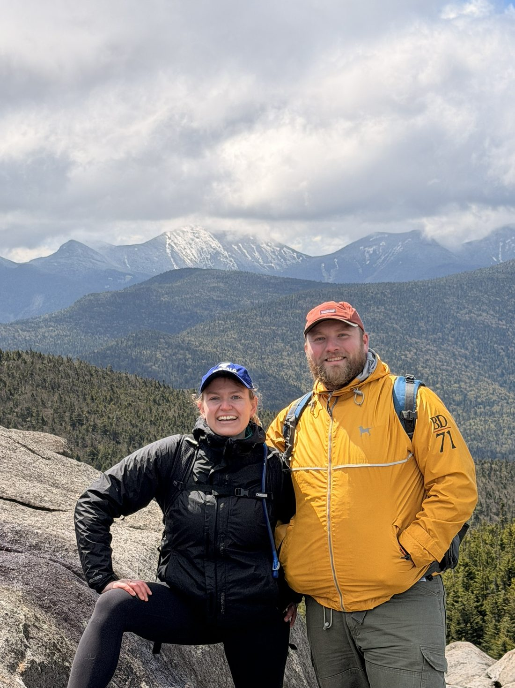

I'm a computational and experimental biologist working across microbial ecology, AI/ML-driven bioinformatics, multi-omics integration, and functional genomics. I like building tools and assays that turn large-scale sequence data into testable biology — currently mapping how mobile genetic elements shape microbial chemistry in the oral microbiome, including a secreted graspetide protease inhibitor in Porphyromonas gingivalis.